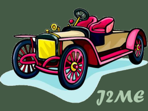
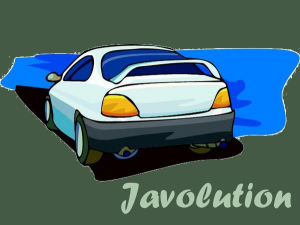

Javolution - JavaTM Solution for Real-Time and Embedded Systems
- Because real-time programming requires a time-predictable standard library.
The ability to simplify means to eliminate the unnecessary so that the necessary may speak.
Hans Hofmann, Introduction to the Bootstrap, 1993


Javolution - A JavaTM Revolution ?
- Transparent object recycling - No memory allocation, memory defragmentation or garbage collection ever.
- Configurable/Inheritable XML serialization/deserialization integrated with NIO framework.
- Allow your application/library to run on any platform from the J2ME CLDC 1.1 to the latest J2EE 1.5
- Text manipulation several order of magnitude faster than using
java.lang.String.
- Guaranteed response time. No internal table resize/copy ever performed and for threads running in PoolContext no garbage collection either.
- Low-level concurrency support.
- The fastest implementations of the most common interfaces (e.g. FastMap for
java.util.Map interface).
- Free...
The "Top 10" reasons why you should be using Javolution:
- Objects can be allocated on the "stack" and transparently recycled.
With Javolution, your application is busy doing the real work
not memory management (e.g. Javolution
RealtimeParser
is 3-5x faster than conventional XML parsers only because it does not waste 2/3
of the CPU doing memory allocation/garbage collection).
- Javolution classes are simple to use, even simpler than most JDK classes.
For example, you don't need to guess the capacity of a
TextBuilder
or a FastList, their size
expand gently without ever incurring expensive resize/copy operations (unlike
standard classes such as
StringBuffer or ArrayList).
- Javolution classes are fast, very fast...
Text concatenations are several order of
magnitude faster than concatenation using
String and several times faster than
concatenations using StringBuffer/StringBuilder
(See benchmark).
- Javolution runs on any platform from the simplest J2ME CLDC with no garbage collector
to the latest J2EE 1.5 Furthermore, with Javolution your class may implement the
latest interfaces such as
Serializable, Comparable,
Appendable and still run on the J2ME CLDC platform where these interfaces do not exist.
- All Javolution classes are hard real-time compliant and have highly deterministic
behavior (in the microsecond range).
For applications based upon the Real-Time Specification for Java (RTSJ)
all threads (including
NoHeapRealtimeThread) can run in ImmortalMemory
and avoid memory clashes!
- With Javolution, concurrent algorithms can take advantage of multi-processors systems
in a transparent manner
(ref. ConcurrentContext).
- Any JavaTM class can be serialized/deserialized in XML format
in any form you may want (no need to implement
Serializable or for the platform to support serialization)!
- Using the Javolution Struct
and Union base classes, your code can directly
share information with C/C++ native applications.
- Javolution provides the fastest implementation of the latest interfaces
and gets better and faster every day.
- Javolution is a pure JavaTM Solution (no native code), small
(less than 200 KBytes jar file) and free; permission to use, copy, modify, and
distribute this software is freely granted, provided that copyright notices are preserved.
Features:
- Real-time framework:
- Objects can be allocated on the "stack" to avoid garbage collection.
- Faster code executions by reusing stack/pool objects instead of creating new objects.
- Easier concurrent
programming in low level methods with no thread creation overhead.
- Supports for the encoding of objects into XML; and the complementary reconstruction
of the object graph from XML (xml package).
- XML parsing with no
String allocation!
It allows our RealtimeParser
to run several times faster than conventional SAX2 parsers.
- Provides all the latest (JDK1.5) interfaces and exceptions for:
-
java.lang (e.g CharSequence, Appendable, Cloneable, Comparable ...)
-
java.io (e.g Serializable, Flushable ...)
-
java.util (e.g List, Map, Set, Formattable ...)
It allows your classes to implement the latest interfaces and still run
in the embedded world!
- Real-time implementations of
Map,
List
and Set.
- Struct
and Union classes for
direct interoperability with
C/C++ applications.
- Reflection
utility class. Any method or constructor can be dynamically invoked using its
signature represented as a
String.
- Text class, an improved version
of
java.lang.String with amazingly fast concatenation speed
(faster than using StringBuffer).
Also, unlike java.lang.String, the Text
class in not plagued by the substring memory leak
bug!
- Appendable character sequence
TextBuilder same operations as
StringBuffer/StringBuilder, but no capacity to specify
and no resize/copy operations ever.
- Utility class TypeFormat
to parse any
CharSequence into primitive types, and format
any primitive type into an Appendable (up to 15x faster
than the standard parsing/formatting utilities).
- Miscellaneous UTF-8 readers/writers,
math functions,
locks, etc...
java -cp javolution.jar ... (JRE1.4, JRE1.5+)
java -Xbootclasspath/a:javolution.jar ... (J2ME, JRE1.1 .. JRE1.3)
Important: Do not deploy applications using the -Xbootclasspath: or
-Xbootclasspath/p: option to override core JavaTM classes,
because such a deployment would contravene the Java 2 Runtime Environment binary code license.
Runtime Environment: Any (J2ME CLDC, J2SE, J2EE, GCJ)
Compilers: All (including GNU Compiler for Java)
Build tool: Apache Ant
Collaborative Tool: java.net (code development, comments, issues, bug reporting).
Coding Standard:
SunTM Code Convention with Addendum.
Preferred Environment: Eclipse (UTF-8 Encoding).
Self-executable command line arguments:
java [options] -jar javolution.jar version (shows version information)
java [options] -jar javolution.jar test (performs self-tests)
java [options] -jar javolution.jar perf (runs benchmark)
Here are the benchmark results on a
Single-CPU Intel Pentium 5 2.20GHz running Windows 2000.
Articles related to Javolution
(previously known as: J.A.D.E. Java Addition to Default Environment):
Known projects using Javolution:
(Let us know if your project uses Javolution and you would like it to be listed here)
Javolution's users can also show their support with the
 button
(e.g.
button
(e.g. <a href="http://javolution.org"><img src="http://javolution.org/doc/img/javolution.png"></a>);
this is of course purely optional.
- November 30, 2004: Javolution 2.0.3
Added XmlInputStream
XmlOutputStreamfor communication over persistent connections [2.0.3]
Facilitated the use of FastMap as identity map (ref. javadoc example) [2.0.3]
Removed limitation on the number of Context [2.0.3]
Added XML Serialization/Deserialization benchmark [2.0.2]
The XML serialization/deserialization
is fully integrated with the high-performance NIO facility (ref. last example) [2.0.1]
Added Utf8ByteBufferReader
and Utf8ByteBufferWriter classes
for high-performance I/O [2.0.1]
Bootclasspath not necessary only for JRE V1.4+ [2.0.0]
Re-packaged utility classes (moved few classes to javolution.io and javolution.lang) [2.0.0]
Less restrictive licensing (dropped LGPL) [2.0.0]
- November 8, 2004: Javolution 1.1
Cleared dangling reference in FastMap (thanks Nicolas) [1.1.2]
Enhanced xml serialization/deserialization framework (e.g. circular references support) [1.1.1]
Added cross-platform math library. [1.1.0]
- October 4, 2004: Javolution 1.0
Optimized FastMap (10% faster) [1.0.8]
Made all utilities classes public domain [1.0.6]
Added gcj support [1.0.5]
Added default XML formats for Object, String, Collection and Map [1.0.4]
Migration completed and tested [1.0.3]
Spin-off of Java(TM) Addition to Default Environment [1.0.0]
 Comments To: Jean-Marie Dautelle
Comments To: Jean-Marie Dautelle
Revision: November 30, 2004
JavaTM is a trademark of Sun Microsystems, Inc